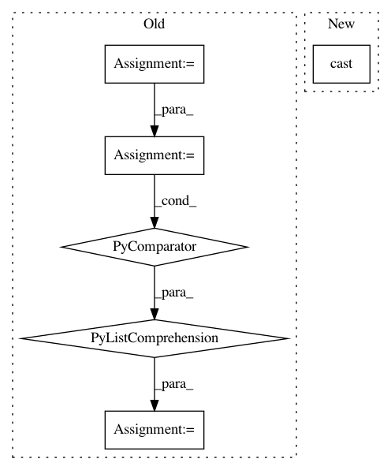

e49dbd02c177843b023d3104b9596bd47440c308,niftynet/layer/resampler.py,ResamplerLayer,_resample_linear,#ResamplerLayer#Any#Any#,82
Before Change
f_1 = _pyramid_combination(samples[1::2], w_0[:-1], w_1[:-1])
return f_0 * w_1[-1] + f_1 * w_0[-1]
binary_neighbour_ids = [
[int(c) for c in format(i, "0%ib" % in_spatial_rank)]
for i in range(2 ** in_spatial_rank)]
samples = [get_knot(bc) for bc in binary_neighbour_ids]
return _pyramid_combination(samples, weight_0, weight_1)
def _resample_bspline(self, inputs, sample_coords):
After Change
tf.range(batch_size), [batch_size] + [1] * out_spatial_rank)
batch_ids = tf.tile(batch_ids, [1] + out_spatial_size)
sc = (tf.cast(floor_coords, COORDINATES_TYPE),
tf.cast(ceil_coords, COORDINATES_TYPE))
def get_knot(bc):
coord = [sc[c][i] for i, c in enumerate(bc)]
In pattern: SUPERPATTERN
Frequency: 3
Non-data size: 6
Instances
Project Name: NifTK/NiftyNet
Commit Name: e49dbd02c177843b023d3104b9596bd47440c308
Time: 2017-10-31
Author: wenqi.li@ucl.ac.uk
File Name: niftynet/layer/resampler.py
Class Name: ResamplerLayer
Method Name: _resample_linear
Project Name: keras-team/keras
Commit Name: 6a8815de0cec97480e2f0ce4769ceaf1121274bd
Time: 2016-07-27
Author: pradeep.dasigi@gmail.com
File Name: keras/engine/topology.py
Class Name: Merge
Method Name: compute_mask
Project Name: facebookresearch/Horizon
Commit Name: 674ecfb9db45ff2f65088ef4662401f29cb3a8ad
Time: 2019-07-07
Author: jjg@fb.com
File Name: ml/rl/workflow/preprocess_handler.py
Class Name: ContinuousPreprocessHandler
Method Name: preprocess